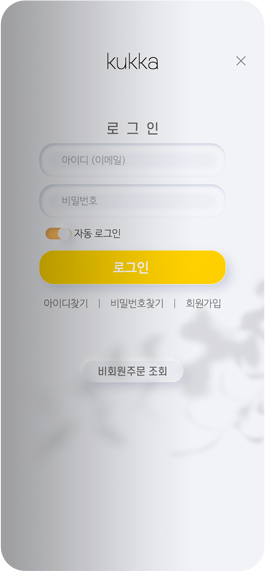
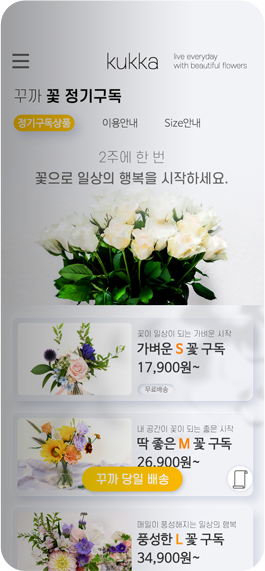

KUKKAMobile UI/UX Design
Overview
꽃 주문 및 정기구독 배송을 하는 브랜드 KUKKA를 리뉴얼하여, 모바일 웹 UI/UX 디자인했습니다.
화려한 색상의 꽃을 강조하기 위해 전반적인 색상은 무채색으로 구성하였고 뉴모피즘 디자인을 일부 사용하였습니다.
-
- 작업 기여도
- 개인작업 100%
-
- 작업 프로그램


- 

- 
01
- HOME
- Miniaml Interface
-
사용자의 신속한 접근성을 위하여 메뉴 중 이용 빈도가 높은 4개만 추출하여 홈 화면을 구성하였습니다.
꽃 이미지의 칼라가 강조되도록 그 외 UI는 최소한의 색상 및 디자인을 적용하였습니다.
02
- Graphic Style
- NEUMORPHISM | UI 뉴모피즘 디자인 적용
- 그레이톤 단일 색상의 픽토그램 아이콘 제작 및 활용을 통한 심플함을 추구하였습니다.
03
- Color / Typography
- 심플한 UI와 다채로운 꽃 이미지가 돋보이도록, 직선 형태의 타이포를 통한 대조효과를 주고 가독성을 높였습니다.
04
Function
05
Flow Chart